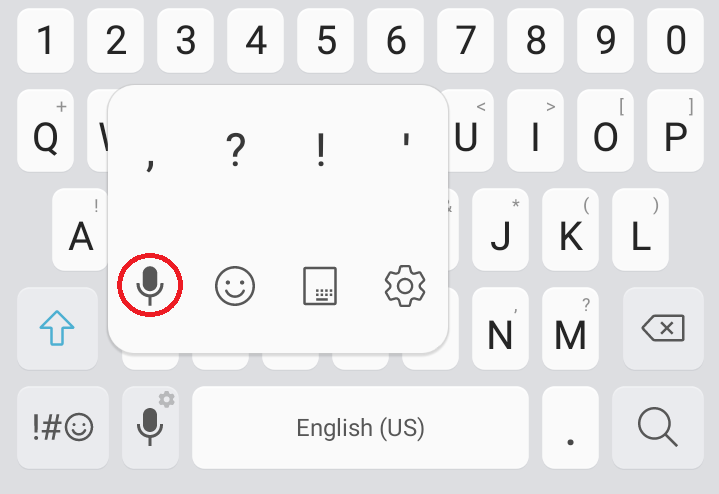

<!--
  Generated template for the ModalPage page.

  See http://ionicframework.com/docs/components/#navigation for more info on
  Ionic pages and navigation.
-->
<ion-header>

  <ion-navbar>
    <ion-title>Tutorial</ion-title>
    <button ion-button (click)="closeModal()">Close</button>
  </ion-navbar>

</ion-header>


<ion-content padding>
<h2>How to Use</h2>
<h3>For Android Users:</h3>
<h3>1. Go to settings > General Management > Language and Input</h3>

<h3>2. Enable Google voice typing</h3>

<h3>For iOS Users:</h3>
<h3>1. Go to settings > General > Keyboards</h3>

<h3>2. Enable Dictation</h3>

</ion-content>